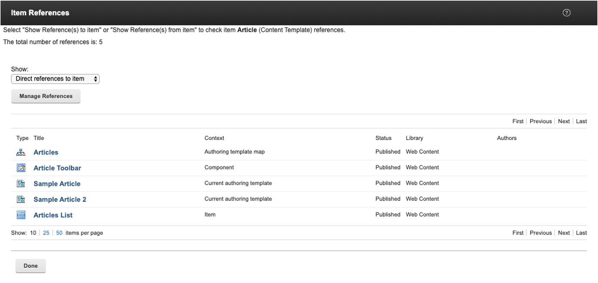

How to use REST with content items
You can use the HCL Web Content Manager REST service to create, read, update, and delete content items.
For HCL Digital Experience 9.5 CF173, CF18 and higher releases: You can use the Web Content Manager REST service to retrieve content or components with references to externally managed resources, using the Digital Asset Manager plugin. This option is also available to HCL Digital Experience 8.5 and 9.0 CF18 users.
HCL Digital Experience 9.5 Container Update CF181 and higher releases add the Web Content Manager Reference API that developers can use to find references to a Web Content or Digital Asset Management item identified by its UUID
Pre-requisite:
Configure the Digital Asset Manager service plug-in. Go to Configuring the HCL Digital Experience Web Content Manager plug-in for more information.
Export DAM References API
This API supports retrieving content or components with references to externally managed resources using the Digital Asset Manager plugin. The results will expose a link to a WCM content item or component to the linked resource that is managed externally.
WCM content items or components managed in external resources can be retrieved using the following GET request formats:
-
Endpoint
GET request to Content:
http://host:port/wps/mycontenthandler/wcmrest/Content/<UUID of the content>Sample URL:
http://localhost:10039/wps/mycontenthandler/wcmrest/Content/5331114d-e07e-4d10-9091-f037e0f0a42fGET request to ImageComponent:
http://host:port/wps/mycontenthandler/wcmrest/LibraryImageComponent/<UUID of the component>Sample URL:
http://localhost:10039/wps/mycontenthandler/wcmrest/LibraryImageComponent/5331114d-e07e-4d10-9091-f037e0f0a42fGET request to FileComponent:
http://host:port/wps/mycontenthandler/wcmrest/LibraryFileComponent/<UUID of the component>Sample URL:
http://localhost:10039/wps/mycontenthandler/wcmrest/LibraryFileComponent/5331114d-e07e-4d10-9091-f037e0f0a42f -
Expected Body
The content Body can have the basic WCM structure or be empty:
<?xml version="1.0" encoding="UTF-8"?> <feed xmlns="http://www.w3.org/2005/Atom" xmlns:wcm="http://www.ibm.com/xmlns/wcm/8.0"> </feed> -
Expected Headers
LTPA token of the user.
-
Return body
Note
- For additional information regarding the structure for content and components reference, see How to REST with components.
- For additional information regarding the structure for content, see How to use REST with content items. Sample for a content item that has a file and image element that are populated by linked Digital Asset Manager (external) references:
<?xml version="1.0" encoding="UTF-8"?><entry xmlns="http://www.w3.org/2005/Atom" xmlns:wcm="http://www.ibm.com/xmlns/wcm/8.0"> <id>wcmrest:5331114d-e07e-4d10-9091-f037e0f0a42f</id> <title xml:lang="en">content</title> <summary xml:lang="en"></summary> <wcm:name>content</wcm:name> <wcm:type>Content</wcm:type> <updated>2020-03-12T19:16:06.934Z</updated> <wcm:created>2020-03-12T19:16:06.934Z</wcm:created> <author> <wcm:distinguishedName>uid=wpsadmin,o=defaultWIMFileBasedRealm</ wcm:distinguishedName> <uri>/wps/mycontenthandler/!ut/p/digest!9GRUk0MKduqatA7U-8CVEQ/um/users/ profiles/Z9eAeIHD63QC6N1P2MMS6J1C6JMG64JDEJM4CP9ECMMCCKHC83IHCK9P2JRKCN1</uri> <name>wpsadmin</name> </author> <wcm:owner> <wcm:distinguishedName>uid=wpsadmin,o=defaultWIMFileBasedRealm</wcm:distinguishedName> <uri>/wps/mycontenthandler/!ut/p/digest!9GRUk0MKduqatA7U-8CVEQ/um/users/ profiles/Z9eAeIHD63QC6N1P2MMS6J1C6JMG64JDEJM4CP9ECMMCCKHC83IHCK9P2JRKCN1</uri> <name>wpsadmin</name> </wcm:owner> <wcm:lastModifier> <wcm:distinguishedName>uid=wpsadmin,o=defaultWIMFileBasedRealm</wcm:distinguishedName> <uri>/wps/mycontenthandler/!ut/p/digest!9GRUk0MKduqatA7U-8CVEQ/um/users/profiles/ Z9eAeIHD63QC6N1P2MMS6J1C6JMG64JDEJM4CP9ECMMCCKHC83IHCK9P2JRKCN1</uri> <name>wpsadmin</name> </wcm:lastModifier> <wcm:creator> <wcm:distinguishedName>uid=wpsadmin,o=defaultWIMFileBasedRealm</wcm:distinguishedName> <uri>/wps/mycontenthandler/!ut/p/digest!9GRUk0MKduqatA7U-8CVEQ/um/users/ profiles/Z9eAeIHD63QC6N1P2MMS6J1C6JMG64JDEJM4CP9ECMMCCKHC83IHCK9P2JRKCN1</uri> <name>wpsadmin</name> </wcm:creator> <wcm:profile/> <link rel="self" href="/wps/mycontenthandler/!ut/p/digest!9GRUk0MKduqatA7U-8CVEQ/ wcmrest/Content/5331114d-e07e-4d10-9091-f037e0f0a42f" xml:lang="en" label="Read"/> <link rel="edit" href="/wps/mycontenthandler/!ut/p/digest!9GRUk0MKduqatA7U-8CVEQ/ wcmrest/Content/5331114d-e07e-4d10-9091-f037e0f0a42f" xml:lang="en" label="Edit"/> <link rel="delete" href="/wps/mycontenthandler/!ut/p/digest!9GRUk0MKduqatA7U-8CVEQ/ wcmrest/Content/5331114d-e07e-4d10-9091-f037e0f0a42f" xml:lang="en" label="Delete"/> <link rel="create-draft" href="/wps/mycontenthandler/!ut/p/digest! 9GRUk0MKduqatA7U-8CVEQ/wcmrest/item/5331114d-e07e-4d10-9091-f037e0f0a42f/create- draft" xml:lang="en" label="Create Draft"/> <link rel="change-to-draft" href="/wps/mycontenthandler/!ut/p/digest! 9GRUk0MKduqatA7U-8CVEQ/wcmrest/item/5331114d-e07e-4d10-9091-f037e0f0a42f/change- to-draft" xml:lang="en" label="Change To Draft"/> <link rel="access-control" href="/wps/mycontenthandler/!ut/p/digest! 9GRUk0MKduqatA7U-8CVEQ/ac/ access:oid:Z6QReDeLPC6JO46H1D8MMKCGPDAMMG64BC0JM47G9E2JMOCGPCEJI166 3C26Q8663" xml:lang="en" label="Access Control"/> <link rel="library" href="/wps/mycontenthandler/!ut/p/digest! 9GRUk0MKduqatA7U-8CVEQ/wcmrest/Library/a2f8d947-0879-48ad-841f-e8c1c9df5bf1" xml:lang="en" label="Library"/> <link rel="parent" href="/wps/mycontenthandler/!ut/p/digest!9GRUk0MKduqatA7U-8CVEQ/ wcmrest/SiteArea/289526f2-351d-4a21-9d81-e354d6d73bf1" xml:lang="en" label="Parent"/> <link rel="versions" href="/wps/mycontenthandler/!ut/p/digest! 9GRUk0MKduqatA7U-8CVEQ/wcmrest/item/5331114d-e07e-4d10-9091-f037e0f0a42f/ versions" xml:lang="en" label="Versions"/> <link rel="preview" href="/wps/poc/!ut/p/digest!9GRUk0MKduqatA7U-8CVEQ/wcm/oid: 5331114d-e07e-4d10-9091-f037e0f0a42f" xml:lang="en" label="Preview"/> <link rel="edit-media" href="/wps/mycontenthandler/!ut/p/digest! 9GRUk0MKduqatA7U-8CVEQ/wcmrest/Content/5331114d-e07e-4d10-9091-f037e0f0a42f" type="application/vnd.ibm.wcm+xml" xml:lang="en" label="Edit Media"/> <link rel="content-template" href="/wps/mycontenthandler/!ut/p/digest! 9GRUk0MKduqatA7U-8CVEQ/wcmrest/ContentTemplate/5f04d8ba-90b5-43db- a0c4-781dcfb999d4" xml:lang="en" label="Content Template"/> <link rel="elements" href="/wps/mycontenthandler/!ut/p/digest! 9GRUk0MKduqatA7U-8CVEQ/wcmrest/Content/5331114d-e07e-4d10-9091-f037e0f0a42f/ elements" xml:lang="en" label="Elements"/> <category scheme="wcmrest:workflowState" term="PUBLISHED" label="Published" xml:lang="en"/> <category scheme="wcmrest:favorite" term="false" xml:lang="en"/> <content type="application/vnd.ibm.wcm+xml"> <wcm:content xmlns="http://www.ibm.com/xmlns/wcm/8.0"> <elements xmlns:atom="http://www.w3.org/2005/Atom"> <element name="image"> <title xml:lang="en">image</title> <type>ImageComponent</type> <data type="application/vnd.ibm.wcm+xml"> <image> <dimension height="" width="" border="0"/> <altText></altText> <tagName></tagName> <fileName>IMG_0001.jpg</fileName> <resourceUri type="image/jpeg">http://ml-latest.com:3001/dx/api/ media-library/v0/collections/faab3654-20dd-4c01-8936-c272b992e6f9/items/ c074e9c8-4e22-4ed0-a82a-3c593d9d9577?binary=true</resourceUri> </image> </data> </element> <element name="file"> <title xml:lang="en">file</title> <type>FileComponent</type> <data type="application/vnd.ibm.wcm+xml"> <resourceUri type="application/pdf">http://ml-latest.com:3001/dx/ api/media-library/v0/collections/faab3654-20dd-4c01-8936-c272b992e6f9/items/ 18f580ed-967c-4c9c-8f0a-dab76e8f2113?binary=true</resourceUri> </data> </element> <element name="text"> <title xml:lang="en">text</title> <type>RichTextComponent</type> <data type="text/html"/> </element> </elements> </wcm:content> </content> </entry>
Web Content Manager Reference API
This API lets developers find and retrieve all references to a Digital Asset Management asset or Web Content Manager item identified by its UUID.
It is equivalent to the functionality in the user interface (for finding Web Content Manager items):

Note
Currently, the Web Content Manager Reference API only supports the GET operation for retrieving items. To update items, the document outlines how to use existing APIs to make updates.
Using the Web Content Manager Reference GET API:
Endpoint
-
GET
http://host:port/wps/mycontenthandler/wcmrest/references/wcm/<UUID of WCM item>http://host:port/wps/mycontenthandler/wcmrest/references/wcm/<UUID of WCM item> -
JSON
For JSON, add
?mime-type=application/json
Sample URL:
http://samplehost.com:10039/wps/mycontenthandler/!ut/p/digest!DEqoG-vlJYym_KoW9OQbyw/wcmrest/references/wcm/3d464f55-d909-41dd-b760-57667ddd290c
Sample URL JSON:
http://samplehost.com:10039/wps/mycontenthandler/!ut/p/digest!DEqoG-vlJYym_KoW9OQbyw/wcmrest/references/wcm/3d464f55-d909-41dd-b760-57667ddd290c?mime-type=application/json
Expected Body
The body can just have the basic WCM structure:
-
BODY
<?xml version="1.0" encoding="UTF-8"?> <feed xmlns="http://www.w3.org/2005/Atom" xmlns:wcm="http://www.ibm.com/xmlns/wcm/8.0"> </feed>
Expected Headers
LTPA token of the user. Also works anonymously.
Query Parameters
None.
Limitations
Currently, Digital Asset Manager (DAM) UUID references for elements and components are found – but items are not retrieved from within Rich Text. Retrieval of UUID items in Rich Text will be supported in a later update.
Return Body
The found/retrieved results.
Sample:
<?xml version="1.0" encoding="UTF-8"?><feed xmlns="http://www.w3.org/2005/Atom" xmlns:wcm="http://www.ibm.com/xmlns/wcm/8.0">
<id>wcmrest:Project/3d464f55-d909-41dd-b760-57667ddd290c/project-items</id>
<title>wcmrest:Project/3d464f55-d909-41dd-b760-57667ddd290c/project-items</title>
<updated>2020-04-24T15:59:54.529Z</updated>
<total>5</total>
<entry>
<id>wcmrest:10c4700e-b25d-4609-875a-62bfdb557c88</id>
<title xml:lang="en">Articles</title>
<wcm:displayTitle xml:lang="en">Articles</wcm:displayTitle>
<summary xml:lang="en"></summary>
<wcm:name>Articles</wcm:name>
<wcm:type>SiteArea</wcm:type>
<updated>2020-04-23T19:18:35.462Z</updated>
<wcm:lastModifier>
<wcm:distinguishedName>uid=wpsadmin,o=defaultWIMFileBasedRealm</wcm:distinguishedName>
<uri>/wps/mycontenthandler/!ut/p/digest!DEqoG-vlJYym_KoW9OQbyw/um/users/profiles/Z9eAeO1E2MPKCIPC2MMK6HHOCJMG63BOAMM4CK9OAMMKCMPCAMPC61BOE3SC653</uri>
<name>wpsadmin</name>
</wcm:lastModifier>
<link rel="edit" href="/wps/mycontenthandler/!ut/p/digest!DEqoG-vlJYym_KoW9OQbyw/wcmrest/SiteArea/10c4700e-b25d-4609-875a-62bfdb557c88" xml:lang="en" label="Edit"/>
<link rel="alternate" href="/wps/mycontenthandler/!ut/p/digest!DEqoG-vlJYym_KoW9OQbyw/wcmrest/SiteArea/10c4700e-b25d-4609-875a-62bfdb557c88" xml:lang="en" label="Read"/>
<link rel="library" href="/wps/mycontenthandler/!ut/p/digest!DEqoG-vlJYym_KoW9OQbyw/wcmrest/Library/1c9bc3d5-9cb3-46ac-b489-85846a76c05b" xml:lang="en" label="Library"/>
<link rel="preview" href="/wps/poc/!ut/p/digest!DEqoG-vlJYym_KoW9OQbyw/wcm/oid:10c4700e-b25d-4609-875a-62bfdb557c88" xml:lang="en" label="Preview"/>
<category scheme="wcmrest:workflowState" term="PUBLISHED" label="Published" xml:lang="en"/>
</entry>
<entry>
<id>wcmrest:fb6ea2bd-47e2-4b2c-8e16-48aeff35eb4e</id>
<title xml:lang="en">Sample Article</title>
<wcm:displayTitle xml:lang="en">Sample Article</wcm:displayTitle>
<summary xml:lang="en"></summary>
<wcm:name>Sample Article</wcm:name>
<wcm:type>Content</wcm:type>
<updated>2020-04-23T19:18:35.462Z</updated>
<wcm:lastModifier>
<wcm:distinguishedName>uid=wpsadmin,o=defaultWIMFileBasedRealm</wcm:distinguishedName>
<uri>/wps/mycontenthandler/!ut/p/digest!DEqoG-vlJYym_KoW9OQbyw/um/users/profiles/Z9eAeO1E2MPKCIPC2MMK6HHOCJMG63BOAMM4CK9OAMMKCMPCAMPC61BOE3SC653</uri>
<name>wpsadmin</name>
</wcm:lastModifier>
<link rel="edit" href="/wps/mycontenthandler/!ut/p/digest!DEqoG-vlJYym_KoW9OQbyw/wcmrest/Content/fb6ea2bd-47e2-4b2c-8e16-48aeff35eb4e" xml:lang="en" label="Edit"/>
<link rel="alternate" href="/wps/mycontenthandler/!ut/p/digest!DEqoG-vlJYym_KoW9OQbyw/wcmrest/Content/fb6ea2bd-47e2-4b2c-8e16-48aeff35eb4e" xml:lang="en" label="Read"/>
<link rel="library" href="/wps/mycontenthandler/!ut/p/digest!DEqoG-vlJYym_KoW9OQbyw/wcmrest/Library/1c9bc3d5-9cb3-46ac-b489-85846a76c05b" xml:lang="en" label="Library"/>
<link rel="preview" href="/wps/poc/!ut/p/digest!DEqoG-vlJYym_KoW9OQbyw/wcm/oid:fb6ea2bd-47e2-4b2c-8e16-48aeff35eb4e" xml:lang="en" label="Preview"/>
<category scheme="wcmrest:workflowState" term="PUBLISHED" label="Published" xml:lang="en"/>
</entry>
<entry>
<id>wcmrest:4039c2b7-3fa6-4026-a2ed-f6320ee1f6d9</id>
<title xml:lang="en">Sample Article 2</title>
<wcm:displayTitle xml:lang="en">Sample Article 2</wcm:displayTitle>
<summary xml:lang="en"></summary>
<wcm:name>Sample Article 2</wcm:name>
<wcm:type>Content</wcm:type>
<updated>2020-04-23T19:18:35.463Z</updated>
<wcm:lastModifier>
<wcm:distinguishedName>uid=wpsadmin,o=defaultWIMFileBasedRealm</wcm:distinguishedName>
<uri>/wps/mycontenthandler/!ut/p/digest!DEqoG-vlJYym_KoW9OQbyw/um/users/profiles/Z9eAeO1E2MPKCIPC2MMK6HHOCJMG63BOAMM4CK9OAMMKCMPCAMPC61BOE3SC653</uri>
<name>wpsadmin</name>
</wcm:lastModifier>
<link rel="edit" href="/wps/mycontenthandler/!ut/p/digest!DEqoG-vlJYym_KoW9OQbyw/wcmrest/Content/4039c2b7-3fa6-4026-a2ed-f6320ee1f6d9" xml:lang="en" label="Edit"/>
<link rel="alternate" href="/wps/mycontenthandler/!ut/p/digest!DEqoG-vlJYym_KoW9OQbyw/wcmrest/Content/4039c2b7-3fa6-4026-a2ed-f6320ee1f6d9" xml:lang="en" label="Read"/>
<link rel="library" href="/wps/mycontenthandler/!ut/p/digest!DEqoG-vlJYym_KoW9OQbyw/wcmrest/Library/1c9bc3d5-9cb3-46ac-b489-85846a76c05b" xml:lang="en" label="Library"/>
<link rel="preview" href="/wps/poc/!ut/p/digest!DEqoG-vlJYym_KoW9OQbyw/wcm/oid:4039c2b7-3fa6-4026-a2ed-f6320ee1f6d9" xml:lang="en" label="Preview"/>
<category scheme="wcmrest:workflowState" term="PUBLISHED" label="Published" xml:lang="en"/>
</entry>
<entry>
<id>wcmrest:fa77c56b-6af7-4491-bc4e-7b464c3832a3</id>
<title xml:lang="en">Articles List</title>
<wcm:displayTitle xml:lang="en">Articles List</wcm:displayTitle>
<summary xml:lang="en"></summary>
<wcm:name>Articles List</wcm:name>
<wcm:type>LibraryMenuComponent</wcm:type>
<updated>2020-04-23T19:18:35.462Z</updated>
<wcm:lastModifier>
<wcm:distinguishedName>uid=wpsadmin,o=defaultWIMFileBasedRealm</wcm:distinguishedName>
<uri>/wps/mycontenthandler/!ut/p/digest!DEqoG-vlJYym_KoW9OQbyw/um/users/profiles/Z9eAeO1E2MPKCIPC2MMK6HHOCJMG63BOAMM4CK9OAMMKCMPCAMPC61BOE3SC653</uri>
<name>wpsadmin</name>
</wcm:lastModifier>
<link rel="edit" href="/wps/mycontenthandler/!ut/p/digest!DEqoG-vlJYym_KoW9OQbyw/wcmrest/LibraryMenuComponent/fa77c56b-6af7-4491-bc4e-7b464c3832a3" xml:lang="en" label="Edit"/>
<link rel="alternate" href="/wps/mycontenthandler/!ut/p/digest!DEqoG-vlJYym_KoW9OQbyw/wcmrest/LibraryMenuComponent/fa77c56b-6af7-4491-bc4e-7b464c3832a3" xml:lang="en" label="Read"/>
<link rel="library" href="/wps/mycontenthandler/!ut/p/digest!DEqoG-vlJYym_KoW9OQbyw/wcmrest/Library/1c9bc3d5-9cb3-46ac-b489-85846a76c05b" xml:lang="en" label="Library"/>
<category scheme="wcmrest:workflowState" term="PUBLISHED" label="Published" xml:lang="en"/>
</entry>
<entry>
<id>wcmrest:84efffc2-67fa-403c-b977-8ad74f81390a</id>
<title xml:lang="en">Article Toolbar</title>
<wcm:displayTitle xml:lang="en">Article Toolbar</wcm:displayTitle>
<summary xml:lang="en"></summary>
<wcm:name>Article toolbar</wcm:name>
<wcm:type>LibraryAuthoringToolsComponent</wcm:type>
<updated>2020-04-23T19:18:35.462Z</updated>
<wcm:lastModifier>
<wcm:distinguishedName>uid=wpsadmin,o=defaultWIMFileBasedRealm</wcm:distinguishedName>
<uri>/wps/mycontenthandler/!ut/p/digest!DEqoG-vlJYym_KoW9OQbyw/um/users/profiles/Z9eAeO1E2MPKCIPC2MMK6HHOCJMG63BOAMM4CK9OAMMKCMPCAMPC61BOE3SC653</uri>
<name>wpsadmin</name>
</wcm:lastModifier>
<link rel="edit" href="/wps/mycontenthandler/!ut/p/digest!DEqoG-vlJYym_KoW9OQbyw/wcmrest/LibraryAuthoringToolsComponent/84efffc2-67fa-403c-b977-8ad74f81390a" xml:lang="en" label="Edit"/>
<link rel="alternate" href="/wps/mycontenthandler/!ut/p/digest!DEqoG-vlJYym_KoW9OQbyw/wcmrest/LibraryAuthoringToolsComponent/84efffc2-67fa-403c-b977-8ad74f81390a" xml:lang="en" label="Read"/>
<link rel="library" href="/wps/mycontenthandler/!ut/p/digest!DEqoG-vlJYym_KoW9OQbyw/wcmrest/Library/1c9bc3d5-9cb3-46ac-b489-85846a76c05b" xml:lang="en" label="Library"/>
<category scheme="wcmrest:workflowState" term="PUBLISHED" label="Published" xml:lang="en"/>
</entry>
</feed>
Updating references
Both Digital Asset Management and Web Content Manager references can be updated with the published APIs as documented here: How to use REST with components
Example for Digital Asset Management, to retrieve references to UUID: 7e3cb713-251a-485c-a578-1aa219411b5e
Response:
<?xml version="1.0" encoding="UTF-8"?><feed xmlns="http://www.w3.org/2005/Atom" xmlns:wcm="http://www.ibm.com/xmlns/wcm/8.0">
<id>wcmrest:Project/7e3cb713-251a-485c-a578-1aa219411b5e/project-items</id>
<title>wcmrest:Project/7e3cb713-251a-485c-a578-1aa219411b5e/project-items</title>
<updated>2020-05-11T15:59:18.639Z</updated>
<total>1</total>
<entry>
<id>wcmrest:43174081-4f88-436a-a87b-16e6375c2e8f</id>
<title xml:lang="en">testmeout</title>
<summary xml:lang="en"></summary>
<wcm:name>testmeout</wcm:name>
<wcm:type>Content</wcm:type>
<updated>2020-05-11T15:52:39.290Z</updated>
<author>
<wcm:distinguishedName>uid=wpsadmin,o=defaultWIMFileBasedRealm</wcm:distinguishedName>
<uri>/wps/mycontenthandler/!ut/p/digest!HttiyBvTxv1fgs63hc74Pw/um/users/profiles/Z9eAeHPOG3SG6HHC2JMOCG1P8MMG6OPO4JM47JHDAJM076RDG3RGCN1C66SOC53</uri>
<name>wpsadmin</name>
</author>
<wcm:lastModifier>
<wcm:distinguishedName>uid=wpsadmin,o=defaultWIMFileBasedRealm</wcm:distinguishedName>
<uri>/wps/mycontenthandler/!ut/p/digest!HttiyBvTxv1fgs63hc74Pw/um/users/profiles/Z9eAeHPOG3SG6HHC2JMOCG1P8MMG6OPO4JM47JHDAJM076RDG3RGCN1C66SOC53</uri>
<name>wpsadmin</name>
</wcm:lastModifier>
<link rel="edit" href="/wps/mycontenthandler/!ut/p/digest!HttiyBvTxv1fgs63hc74Pw/wcmrest/Content/43174081-4f88-436a-a87b-16e6375c2e8f" xml:lang="en" label="Edit"/>
<link rel="alternate" href="/wps/mycontenthandler/!ut/p/digest!HttiyBvTxv1fgs63hc74Pw/wcmrest/Content/43174081-4f88-436a-a87b-16e6375c2e8f" xml:lang="en" label="Read"/>
<link rel="library" href="/wps/mycontenthandler/!ut/p/digest!HttiyBvTxv1fgs63hc74Pw/wcmrest/Library/f7e965b1-c9e4-4c07-a0e0-de8efb5faf2a" xml:lang="en" label="Library"/>
<link rel="preview" href="/wps/poc/!ut/p/digest!HttiyBvTxv1fgs63hc74Pw/wcm/oid:43174081-4f88-436a-a87b-16e6375c2e8f" xml:lang="en" label="Preview"/>
<category scheme="wcmrest:workflowState" term="PUBLISHED" label="Published" xml:lang="en"/>
</entry>
</feed>
Iterating over the results will use the edit link to fetch the item:
-
GET
/wps/mycontenthandler/!ut/p/digest!HttiyBvTxv1fgs63hc74Pw/wcmrest/Content/43174081-4f88-436a-a87b-16e6375c2e8f<?xml version="1.0" encoding="UTF-8"?><entry xmlns="http://www.w3.org/2005/Atom" xmlns:wcm="http://www.ibm.com/xmlns/wcm/8.0"> <id>wcmrest:43174081-4f88-436a-a87b-16e6375c2e8f</id> <title xml:lang="en">testmeout</title> <summary xml:lang="en"></summary> <wcm:name>testmeout</wcm:name> <wcm:type>Content</wcm:type> <updated>2020-05-11T15:52:39.290Z</updated> <wcm:created>2020-05-11T15:51:52.513Z</wcm:created> <author> <wcm:distinguishedName>uid=wpsadmin,o=defaultWIMFileBasedRealm</wcm:distinguishedName> <uri>/wps/mycontenthandler/!ut/p/digest!HttiyBvTxv1fgs63hc74Pw/um/users/profiles/Z9eAeHPOG3SG6HHC2JMOCG1P8MMG6OPO4JM47JHDAJM076RDG3RGCN1C66SOC53</uri> <name>wpsadmin</name> </author> <wcm:owner> <wcm:distinguishedName>uid=wpsadmin,o=defaultWIMFileBasedRealm</wcm:distinguishedName> <uri>/wps/mycontenthandler/!ut/p/digest!HttiyBvTxv1fgs63hc74Pw/um/users/profiles/Z9eAeHPOG3SG6HHC2JMOCG1P8MMG6OPO4JM47JHDAJM076RDG3RGCN1C66SOC53</uri> <name>wpsadmin</name> </wcm:owner> <wcm:lastModifier> <wcm:distinguishedName>uid=wpsadmin,o=defaultWIMFileBasedRealm</wcm:distinguishedName> <uri>/wps/mycontenthandler/!ut/p/digest!HttiyBvTxv1fgs63hc74Pw/um/users/profiles/Z9eAeHPOG3SG6HHC2JMOCG1P8MMG6OPO4JM47JHDAJM076RDG3RGCN1C66SOC53</uri> <name>wpsadmin</name> </wcm:lastModifier> <wcm:creator> <wcm:distinguishedName>uid=wpsadmin,o=defaultWIMFileBasedRealm</wcm:distinguishedName> <uri>/wps/mycontenthandler/!ut/p/digest!HttiyBvTxv1fgs63hc74Pw/um/users/profiles/Z9eAeHPOG3SG6HHC2JMOCG1P8MMG6OPO4JM47JHDAJM076RDG3RGCN1C66SOC53</uri> <name>wpsadmin</name> </wcm:creator> <wcm:profile/> <link rel="self" href="/wps/mycontenthandler/!ut/p/digest!HttiyBvTxv1fgs63hc74Pw/wcmrest/Content/43174081-4f88-436a-a87b-16e6375c2e8f" xml:lang="en" label="Read"/> <link rel="edit" href="/wps/mycontenthandler/!ut/p/digest!HttiyBvTxv1fgs63hc74Pw/wcmrest/Content/43174081-4f88-436a-a87b-16e6375c2e8f" xml:lang="en" label="Edit"/> <link rel="delete" href="/wps/mycontenthandler/!ut/p/digest!HttiyBvTxv1fgs63hc74Pw/wcmrest/Content/43174081-4f88-436a-a87b-16e6375c2e8f" xml:lang="en" label="Delete"/> <link rel="create-draft" href="/wps/mycontenthandler/!ut/p/digest!HttiyBvTxv1fgs63hc74Pw/wcmrest/item/43174081-4f88-436a-a87b-16e6375c2e8f/create-draft" xml:lang="en" label="Create Draft"/> <link rel="change-to-draft" href="/wps/mycontenthandler/!ut/p/digest!HttiyBvTxv1fgs63hc74Pw/wcmrest/item/43174081-4f88-436a-a87b-16e6375c2e8f/change-to-draft" xml:lang="en" label="Change To Draft"/> <link rel="access-control" href="/wps/mycontenthandler/!ut/p/digest!HttiyBvTxv1fgs63hc74Pw/ac/access:oid:Z6QReDeKPC2JRG6G1E2JMG663EGJMG6JHD2MM4COPD4MM46M9PCJPS6LPO4JI1763" xml:lang="en" label="Access Control"/> <link rel="library" href="/wps/mycontenthandler/!ut/p/digest!HttiyBvTxv1fgs63hc74Pw/wcmrest/Library/f7e965b1-c9e4-4c07-a0e0-de8efb5faf2a" xml:lang="en" label="Library"/> <link rel="parent" href="/wps/mycontenthandler/!ut/p/digest!HttiyBvTxv1fgs63hc74Pw/wcmrest/SiteArea/bf117c51-d2ab-4818-b2de-02e6988fe9ad" xml:lang="en" label="Parent"/> <link rel="versions" href="/wps/mycontenthandler/!ut/p/digest!HttiyBvTxv1fgs63hc74Pw/wcmrest/item/43174081-4f88-436a-a87b-16e6375c2e8f/versions" xml:lang="en" label="Versions"/> <link rel="preview" href="/wps/poc/!ut/p/digest!HttiyBvTxv1fgs63hc74Pw/wcm/oid:43174081-4f88-436a-a87b-16e6375c2e8f" xml:lang="en" label="Preview"/> <link rel="edit-media" href="/wps/mycontenthandler/!ut/p/digest!HttiyBvTxv1fgs63hc74Pw/wcmrest/Content/43174081-4f88-436a-a87b-16e6375c2e8f" type="application/vnd.ibm.wcm+xml" xml:lang="en" label="Edit Media"/> <link rel="content-template" href="/wps/mycontenthandler/!ut/p/digest!HttiyBvTxv1fgs63hc74Pw/wcmrest/ContentTemplate/c7abf2c0-7eff-4396-90e5-943a096c5ab3" xml:lang="en" label="Content Template"/> <link rel="elements" href="/wps/mycontenthandler/!ut/p/digest!HttiyBvTxv1fgs63hc74Pw/wcmrest/Content/43174081-4f88-436a-a87b-16e6375c2e8f/elements" xml:lang="en" label="Elements"/> <category scheme="wcmrest:workflowState" term="PUBLISHED" label="Published" xml:lang="en"/> <category scheme="wcmrest:favorite" term="false" xml:lang="en"/> <content type="application/vnd.ibm.wcm+xml"> <wcm:content xmlns="http://www.ibm.com/xmlns/wcm/8.0"> <elements xmlns:atom="http://www.w3.org/2005/Atom"> <element name="test"> <title xml:lang="en">test</title> <type>ImageComponent</type> <data type="application/vnd.ibm.wcm+xml"> <image> <dimension height="" width="" border="0"/> <altText></altText> <tagName></tagName> <fileName>Screen Shot 2020-05-07 at 10.26.24 AM.png</fileName> <resourceUri type="image/png">http://samplehost.com:3000/dx/api/dam/v0/collections/48839939-375e-4f07-a85d-56d13ddba3c8/items/7e3cb713-251a-485c-a578-1aa219411b5e?binary=true</resourceUri> </image> </data> </element> </elements> </wcm:content> </content> </entry>
To send an update to the item to replace the resourceUri and add fileName and type:
<?xml version="1.0" encoding="UTF-8"?><entry xmlns="http://www.w3.org/2005/Atom" xmlns:wcm="http://www.ibm.com/xmlns/wcm/8.0">
<id>wcmrest:43174081-4f88-436a-a87b-16e6375c2e8f</id>
<title xml:lang="en">testmeout</title>
<summary xml:lang="en"></summary>
<wcm:name>testmeout</wcm:name>
<wcm:type>Content</wcm:type>
<updated>2020-05-11T15:52:39.290Z</updated>
<wcm:created>2020-05-11T15:51:52.513Z</wcm:created>
<author>
<wcm:distinguishedName>uid=wpsadmin,o=defaultWIMFileBasedRealm</wcm:distinguishedName>
<uri>/wps/mycontenthandler/!ut/p/digest!HttiyBvTxv1fgs63hc74Pw/um/users/profiles/Z9eAeHPOG3SG6HHC2JMOCG1P8MMG6OPO4JM47JHDAJM076RDG3RGCN1C66SOC53</uri>
<name>wpsadmin</name>
</author>
<wcm:owner>
<wcm:distinguishedName>uid=wpsadmin,o=defaultWIMFileBasedRealm</wcm:distinguishedName>
<uri>/wps/mycontenthandler/!ut/p/digest!HttiyBvTxv1fgs63hc74Pw/um/users/profiles/Z9eAeHPOG3SG6HHC2JMOCG1P8MMG6OPO4JM47JHDAJM076RDG3RGCN1C66SOC53</uri>
<name>wpsadmin</name>
</wcm:owner>
<wcm:lastModifier>
<wcm:distinguishedName>uid=wpsadmin,o=defaultWIMFileBasedRealm</wcm:distinguishedName>
<uri>/wps/mycontenthandler/!ut/p/digest!HttiyBvTxv1fgs63hc74Pw/um/users/profiles/Z9eAeHPOG3SG6HHC2JMOCG1P8MMG6OPO4JM47JHDAJM076RDG3RGCN1C66SOC53</uri>
<name>wpsadmin</name>
</wcm:lastModifier>
<wcm:creator>
<wcm:distinguishedName>uid=wpsadmin,o=defaultWIMFileBasedRealm</wcm:distinguishedName>
<uri>/wps/mycontenthandler/!ut/p/digest!HttiyBvTxv1fgs63hc74Pw/um/users/profiles/Z9eAeHPOG3SG6HHC2JMOCG1P8MMG6OPO4JM47JHDAJM076RDG3RGCN1C66SOC53</uri>
<name>wpsadmin</name>
</wcm:creator>
<wcm:profile/>
<link rel="self" href="/wps/mycontenthandler/!ut/p/digest!HttiyBvTxv1fgs63hc74Pw/wcmrest/Content/43174081-4f88-436a-a87b-16e6375c2e8f" xml:lang="en" label="Read"/>
<link rel="edit" href="/wps/mycontenthandler/!ut/p/digest!HttiyBvTxv1fgs63hc74Pw/wcmrest/Content/43174081-4f88-436a-a87b-16e6375c2e8f" xml:lang="en" label="Edit"/>
<link rel="delete" href="/wps/mycontenthandler/!ut/p/digest!HttiyBvTxv1fgs63hc74Pw/wcmrest/Content/43174081-4f88-436a-a87b-16e6375c2e8f" xml:lang="en" label="Delete"/>
<link rel="create-draft" href="/wps/mycontenthandler/!ut/p/digest!HttiyBvTxv1fgs63hc74Pw/wcmrest/item/43174081-4f88-436a-a87b-16e6375c2e8f/create-draft" xml:lang="en" label="Create Draft"/>
<link rel="change-to-draft" href="/wps/mycontenthandler/!ut/p/digest!HttiyBvTxv1fgs63hc74Pw/wcmrest/item/43174081-4f88-436a-a87b-16e6375c2e8f/change-to-draft" xml:lang="en" label="Change To Draft"/>
<link rel="access-control" href="/wps/mycontenthandler/!ut/p/digest!HttiyBvTxv1fgs63hc74Pw/ac/access:oid:Z6QReDeKPC2JRG6G1E2JMG663EGJMG6JHD2MM4COPD4MM46M9PCJPS6LPO4JI1763" xml:lang="en" label="Access Control"/>
<link rel="library" href="/wps/mycontenthandler/!ut/p/digest!HttiyBvTxv1fgs63hc74Pw/wcmrest/Library/f7e965b1-c9e4-4c07-a0e0-de8efb5faf2a" xml:lang="en" label="Library"/>
<link rel="parent" href="/wps/mycontenthandler/!ut/p/digest!HttiyBvTxv1fgs63hc74Pw/wcmrest/SiteArea/bf117c51-d2ab-4818-b2de-02e6988fe9ad" xml:lang="en" label="Parent"/>
<link rel="versions" href="/wps/mycontenthandler/!ut/p/digest!HttiyBvTxv1fgs63hc74Pw/wcmrest/item/43174081-4f88-436a-a87b-16e6375c2e8f/versions" xml:lang="en" label="Versions"/>
<link rel="preview" href="/wps/poc/!ut/p/digest!HttiyBvTxv1fgs63hc74Pw/wcm/oid:43174081-4f88-436a-a87b-16e6375c2e8f" xml:lang="en" label="Preview"/>
<link rel="edit-media" href="/wps/mycontenthandler/!ut/p/digest!HttiyBvTxv1fgs63hc74Pw/wcmrest/Content/43174081-4f88-436a-a87b-16e6375c2e8f" type="application/vnd.ibm.wcm+xml" xml:lang="en" label="Edit Media"/>
<link rel="content-template" href="/wps/mycontenthandler/!ut/p/digest!HttiyBvTxv1fgs63hc74Pw/wcmrest/ContentTemplate/c7abf2c0-7eff-4396-90e5-943a096c5ab3" xml:lang="en" label="Content Template"/>
<link rel="elements" href="/wps/mycontenthandler/!ut/p/digest!HttiyBvTxv1fgs63hc74Pw/wcmrest/Content/43174081-4f88-436a-a87b-16e6375c2e8f/elements" xml:lang="en" label="Elements"/>
<category scheme="wcmrest:workflowState" term="PUBLISHED" label="Published" xml:lang="en"/>
<category scheme="wcmrest:favorite" term="false" xml:lang="en"/>
<content type="application/vnd.ibm.wcm+xml">
<wcm:content xmlns="http://www.ibm.com/xmlns/wcm/8.0">
<elements xmlns:atom="http://www.w3.org/2005/Atom">
<element name="test">
<title xml:lang="en">test</title>
<type>ImageComponent</type>
<data type="application/vnd.ibm.wcm+xml">
<image>
<dimension height="" width="" border="0"/>
<altText></altText>
<tagName></tagName>
<fileName>Screen Shot 2020-05-07 at 10.26.24 AM.png</fileName>
<resourceUri type="image/png">http://samplehost.com:3000/dx/api/dam/v0/collections/48839939-375e-4f07-a85d-56d13ddba3c8/items/7e3cb713-251a-485c-a578-1aa219411b5e?binary=true</resourceUri>
</image>
</data>
</element>
</elements>
</wcm:content>
</content>
</entry>
Create
A content item can be created by sending a POST request to the following URI with an Atom entry used to represent the content item:
/Content
- A library or parent link relation must be used to define the location of the hierarchical item that is being created.
- An authoring template must be specified to set what authoring template to use when the item is created.
For example:
-
POST
HTTP/1.1 POST http://host:port/wps/mycontenthandler/wcmrest/Content/ Content-Type: application/atom+xml <atom:entry xmlns:atom="http://www.w3.org/2005/Atom" xmlns:wcm="wcm/namespace"> <wcm:name>Content Name</wcm:name> <atom:title>Content Title</atom:title> <atom:link atom:rel="parent" atom:href="/wps/ mycontenthandler/wcmrest/item/49f4ed95-a99f-434c-a415-77c341fa4893"/> <atom:link atom:rel="workflow" atom:href="/wps/ mycontenthandler/wcmrest/item/abae799b-4cca-47ae-aad8-b3d8204deefb"/> <atom:link atom:rel="content-template" atom:href="/wps/ mycontenthandler/wcmrest/item/588127d0-a4f8-44b5-87a4-5fe3f7bd3da7"/> </atom:entry> -
Response:
201 Created
Create from a skeleton
A "skeleton" representation of a content item that is created from a content template can be obtained to aid in the creation of content items. This can be obtained by using a GET request to the following URI. When the skeleton is obtained and completed a POST request can be made by using this data to create the item.
/ContentTemplate/template-uuid/new-content
For example:
HTTP/1.1 GET http://host:port/wps/mycontenthandler/wcmrest/ContentTemplate/b7b8b3fb-8fa1-4eb3-915e-ce7514f7067f/new-content
Response
200 OK
<?xml version="1.0" encoding="UTF-8"?>
<entry xmlns="http://www.w3.org/2005/Atom" xmlns:wcm="http://www.ibm.com/xmlns/wcm">
<id>wcmrest:6bab48c6-1f24-454e-9bab-ae1be4cf3a0a</id>
<title lang="en"></title>
<summary lang="en"></summary>
<wcm:name></wcm:name>
<wcm:type>Content</wcm:type>
<updated>2012-01-31T03:28:08.118Z</updated>
<author>
<wcm:distinguishedName>uid=wpsadmin,o=defaultWIMFileBasedRealm</
wcm:distinguishedName>
<uri>/wps/mycontenthandler/!ut/p/digest!7K1PhYjxBw0jzCDqHCwg2w/um/
users/profiles/Z9eAeHPCAJG963RD2MMG6P9O6MMG66BD6MM47IHP4MMS6M1DAJQ4C1BCAMID653</uri>
<name>wpsadmin</name>
</author>
<wcm:owner>
<wcm:distinguishedName>uid=wpsadmin,o=defaultWIMFileBasedRealm</wcm:distinguishedName>
<uri>/wps/mycontenthandler/!ut/p/digest!7K1PhYjxBw0jzCDqHCwg2w/um/
users/profiles/Z9eAeHPCAJG963RD2MMG6P9O6MMG66BD6MM47IHP4MMS6M1DAJQ4C1BCAMID653</uri>
<name>wpsadmin</name>
</wcm:owner>
<link label="Library" rel="library" href="/wps/mycontenthandler/!ut/p/
digest!PQo5Yhy68oeppWcEz2sddA/wcmrest/item/a423287f-b0ce-4ee3-9c95-aa0939382228" lang="en"/>
<link label="Content Template" rel="content-template" href="/wps/
mycontenthandler/!ut/p/digest!PQo5Yhy68oeppWcEz2sddA/wcmrest/Content/b7b8b3fb-8fa1-4eb3-915e-ce7514f7067f" lang="en"/>
<content type="application/vnd.ibm.wcm+xml">
<content xmlns="http://www.ibm.com/xmlns/wcm">
<elements>
<element name="Body">
<title lang="en">Body</title>
<type>RichTextComponent</type>
<data type="text/html"></data>
</element>
</elements>
</content>
</content>
</entry>
Update
A content item can be updated by sending a PUT request to the following URI with an Atom entry that specifies the fields on the item that need to be changed.
Note
The name field is required. If the name is not included in the script, the "name must be entered" error appears. This is applicable from CF181 to CF200.
/Content/item-uuid
For example:
-
PUT
XML body
HTTP/1.1 PUT http://host:port/wps/mycontenthandler/wcmrest/Content/abae799b-4cca-47ae-aad8-b3d8204deefb Content-Type: application/atom+xml <atom:entry xmlns:atom="http://www.w3.org/2005/Atom" xmlns:wcm="wcm/namespace"> <wcm:name>Updated Content Name</wcm:name> <atom:title>Updated Content Title</atom:title> </atom:entry>JSON body
HTTP/1.1 PUT http://host:port/wps/mycontenthandler/wcmrest/Content/abae799b-4cca-47ae-aad8-b3d8204deefb Content-Type: application/json { "entry" : { "name" : "Updated Content Name", "title" : { "lang" : "en", "value" : "Updated Content Title" } } } -
Response:
200 OK
Read
A content item can be read by sending a GET request to the following URI:
/Content/item-uuid
For example:
-
GET
HTTP/1.1 GET http://host:port/wps/mycontenthandler/wcmrest/Content/fa2bfd32-7b2f-4394-a5ab-2e150c5ed8aa <atom:entry xmlns:atom="http://www.w3.org/2005/Atom" xmlns:wcm="wcm/namespace"> <atom:id>fa2bfd32-7b2f-4394-a5ab-2e150c5ed8aa</atom:id> <wcm:name>content name145805586</wcm:name> <atom:title>content title145805586</atom:title> <wcm:type>Content</wcm:type> <atom:updated>2011-04-27T04:06:32.643Z</atom:updated> <atom:link atom:rel="edit" atom:href="/wps/mycontenthandler/ wcmrest/Content/fa2bfd32-7b2f-4394-a5ab-2e150c5ed8aa"/> <atom:link atom:rel="library" atom:href="/wps/mycontenthandler/ wcmrest/item/957a67f2-9d70-469f-9d43-f63f78508e48"/> <atom:link atom:rel="parent" atom:href="/wps/mycontenthandler/ wcmrest/item/49f4ed95-a99f-434c-a415-77c341fa4893"/> <atom:link atom:rel="workflow-stage" atom:href="/wps/ mycontenthandler/wcmrest/item/f659d3af-7d45-4fc0-ad37-86e407caf2b6"/> <atom:link atom:rel="workflow" atom:href="/wps/mycontenthandler/ wcmrest/item/abae799b-4cca-47ae-aad8-b3d8204deefb"/> <atom:link atom:rel="versions" atom:href="/wps/mycontenthandler/ wcmrest/item/fa2bfd32-7b2f-4394-a5ab-2e150c5ed8aa/versions"/> <atom:link atom:rel="content-template" atom:href="/wps/mycontenthandler/ wcmrest/item/588127d0-a4f8-44b5-87a4-5fe3f7bd3da7"/> <atom:link atom:rel="elements" atom:href="/wps/mycontenthandler/ wcmrest/Content/fa2bfd32-7b2f-4394-a5ab-2e150c5ed8aa/elements"/> </atom:entry> -
Response:
200 OK
Delete
A content item can be deleted by sending a DELETE request to the following URI:
/Content/item-uuid
For example:
-
DELETE
HTTP/1.1 DELETE http://host:port/wps/mycontenthandler/wcmrest/Content/fa2bfd32-7b2f-4394-a5ab-2e150c5ed8aa/ -
Response:
200 OK